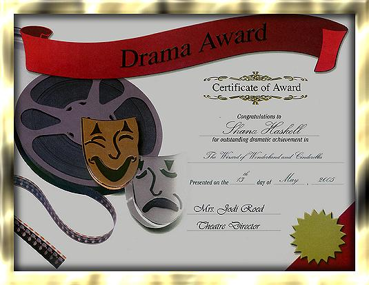

I've been to, 2 professional productions and have performed in a number of high school productions; 2 of which were musicals!
The next few pages [once I've completed them] will be about them.
Productions I've attended:
2003: "Les Miserables", The Fisher Theater in Detroit
[sorry no website for them]
The Fisher Theater is located in the "New Center Area" of Detroit, most of the area was designed and constructed in the 1920?s, primarily by the Fisher Family.
2005: "Phantom of the Opera",
The Masonic Temple Theater in Detroit
The Masonic is in the "Theater District" of Detroit. Detroits Theater District:
"Ranking second in the world in terms of seats (just behind Broadway in New York)."
Quoting from
MotorCityRocks.com
Productions I've been in:
**[Spring musical, 2003]"Yankee Doodle"...cast as Heather
[Fall production, 2003]"Dark and Stormy Night"...cast as Olive
**[Fall production, 2004]"The Wizard of Wonderland"...cast as Dorothy
[Spring musical, 2005]"Cinderella"...cast as The Stepmother, Beulah
**PICS added

?
Home
Click on a button below to navigate:
Background by ShadyLadyGraFix © 2005
All rights reserved.